In Section 1.2, we looked at the CCSS and noted that young learners tended be adept at analyzing patterns. Sequences are a type of pattern that can take on many representations and can allow for various approaches by students for analyzing and solving them. For this reason, this section will examine how students see sequences from both a mathematical and pedagogical perspective. While there are many different kinds of sequences, we will focus primarily on arithmetic, geometric, figurative, and recursive sequences. We will ground our discussion in some classroom excerpts where students are grappling with patterns and also address how the students begin to represent these patterns and the effect this has on their thinking. To begin, we should define what we mean by a sequence.
Definition2.3.1.Sequence.
A sequence is a list of terms \(a_0, a_1, a_2, a_3, \ldots\text{,}\) given in a specific order. These sequenced values can also be thought of as a function of the term number, \(n\text{,}\) and denoted as \(a_n\text{.}\) For the practical use of a computer algebra system, we often express the terms using function notation, \(a\left(n\right)\text{,}\) so that we can define it in the CAS and operate on its terms. To express the entire sequence we often use the notation, \(\left \{a_n \right \}\text{,}\) since we can think of the entire sequence as a list such as \(\left \{a_0, a_1, a_2, a_3, \ldots\right \}\text{.}\)
Subsection2.3.1Arithmetic Sequences
To begin, consider The Border Problem: Part 1 found in Connecting Mathematical Ideas: Middle School Video Cases to Support Teaching and Learning (2005) by Jo Boaler and Cathy Humphreys. In this video case, students are exploring the pattern for finding the number of small shaded squares along the outer edge of a larger \(10 \times 10\) square as seen in Figure 2.3.2.
Figure2.3.2.How Many Small Squares in the Shaded Region?
Activity2.3.1.The Border Problem: Part 1 Reflection.
Watch the classroom episode of Cathy Humphreys’ 7th grade class working on ways to find the border of a square grid. This video is found in the book, Connecting Mathematical Ideas: Middle School Video Cases to Support Teaching and Learning (2005) by Jo Boaler and Cathy Humphreys. You may want to follow along with the provided transcript (pp. 1-5) from Boaler and Humphreys (2005) in case you have a hard time discerning what is being said.
(a)
As you watch the episode for the first time, make some notes of at least 3 things the teacher did to facilitate the discussion and some quick thoughts on why she chose this problem.
(b)
In looking at the CCSS for 7th grade, what are the relevant mathematical concepts involved in this classroom episode?
(c)
Compare your observations from the video with those of your fellow group members. Discuss in your groups why you think the teacher did what she did. How did the students respond?
(d)
The teacher, Cathy, in the episode allows for several different students to explain their way of determining the total number of squares and she writes their method on the board with numerical representations that align with the method. For example, Sharmeen shares her thinking, "Well, first I started out with forty from ten times four and then I subtracted four from that because there would be four squares overlapping, and so that got thirty-six.". Here Cathy writes on the board \(4 \times 10 -4\text{.}\) At this point, Cathy asks the questions, "And the four was for ...?", and "OK. And this four was for?". Discuss in your groups why you think Cathy chose this move in the lesson? From an algebraic standpoint, what is she trying to set up for later discussion?
(e)
Cathy then asks Colin to go up to the front and show his method. Colin shares, "Anyway, so I, like, I know this side is ten so I just did like ten and then this one, this one’s the overlapping one, so then this would be nine, then this one would be nine, too, because this one’s overlapping. And then for this, one it’d be eight because these two, this one is being used by this one and this one is being used by that one." As Colin explains, Cathy writes on the board, \(10+9+9+8\text{.}\) In looking at Sharmeen’s and Colin’s representations, how do you see them as the same? How are they different? Is there a way to move from one to the other in a way that makes physical sense?
(f)
Toward the end of the lesson, Cathy asks the students to imagine shrinking the \(10 \times 10\) square into a \(6 \times 6\) square. She then asks them to use whatever method they want from those previously discussed to determine the number of border square in the \(6 \times 6\) square. In your groups, discuss why you think Cathy asked this question and where you think she is going with this task?
Now that we have speculated about Cathy’s plan for her class, let’s see where she takes the discussion on the next day. In the next activity, pay attention to the way Cathy tries to draw connections between the physical representations of border squares and the way the computations are taking place.
Activity2.3.2.The Border Problem: Part 2 Reflection.
Watch the continuation of the classroom episode of Cathy Humphreys’ 7th grade class working on ways to find the border of a square grid. This video is found in the book, Connecting Mathematical Ideas: Middle School Video Cases to Support Teaching and Learning (2005) by Jo Boaler and Cathy Humphreys. You may want to follow along with the provided transcript (pp. 1-5) from Boaler and Humphreys (2005) in case you have a hard time discerning what is being said.
(a)
In the episode, Cathy asks the question, "What’s staying the same in this arithmetic?". Here Cathy is using the expression, \(10+10+8+8\text{.}\) In your groups, discuss why you think Cathy is asking this question? What is she trying to accomplish with this question with respect to Kaput, Blanton, and Moreno’s model?
Hint.
In looking at Kaput, Blanton, and Moreno (see Figure 1.1.5), how do learners transition to new representation systems?
(b)
At this stage of the discussion, Sarah responds by saying, "Well, the first two numbers are the same numbers and the last two numbers are the same numbers.". Cathy then has the students work in their groups to try and find a way to represent the general process for computing the number of border squares. In her group, Sharmeen, shares, "S and so \(s+s+\left(s-2\right)+\left(s-2\right)\text{.}\) Though that’s kind of complicated. Is there any other way to put it?". Given Sharmeen’s original method from the day before (\(4 \times 10-4\)), what question might you ask Sharmeen to help her link her current method to her previoous one?
(c)
As the discussion progresses, students share ways to represent the computation using more than one variable. Sharmeen abandons her original expression as a group member want to "make it simpler" and instead uses, \(s+s+m+m\text{.}\) Recall that on the first day of The Border Problem, Cathy made an intentional effort to list all student approaches on the board with
In your groups, discuss how these multiple representations might play a role in transitioning the class to use only one variable. What will eventually happen with the expresions if all of the methods use the same variable to represent the "10" from their expressions of the \(10 \times 10\) square computation? How can Cathy leverage these expressions to help the students see they are the same?
(d)
At the beginning of the group work, Sharmeen expressed a way to express the total using only one variable (see part (b)), but then the group decided that it was "kind of complicated" and wanted to find another way to express it more simply. During the class discussion, Stephanie reiterates Sharmeen’s expression by suggesting, "Um, I think maybe you could, like, do \(x\) plus \(x\) for the top and the bottom, or whatever letter you’re using, and then you could do \(\left(x-2\right)+\left(x-2\right)\text{.}\) And that would give you the, um, the total border.". If you were the teacher and had heard Sharmeen’s group discussion while circulating in the class, what would you have done when Stephanie made her suggestion?
(e)
When looking at part (c), one of the representations given was \(10+10+8+8\text{.}\) What question might you ask both Sharmeen and Stephanie to help link the prior representation to their symbolic expression? What does the "8" represent in Sharmeen’s and Stephanie’s expression?
The classroom exchange provides a context to explore this type of sequence. Understanding how a sequence behaves can give us, as teachers, a way to allow students to explore their own observations while facilitating a fruitful discussion. Cathy does a masterful job in allowing students to express their ideas and connecting them during the whole-class interaction. So, let’s look a little deeper at this type of sequence by exploring the question Cathy posed when she asked the students to image shrinking the square to a \(6\times6\) and using various methods to compute the total number of small squares on the border. In this case, we will extend it more to consider the \(n \times n\) case.
Activity2.3.3.
Cathy asked her students to think about shrinking the square and to find a way to computer the number of small squares on the border. For this activity, we will collect data to analyze the characteristics of this type of sequence.
(a)
Using graph paper or small blocks, make a rough sketch or model of the first 8 cases (beginning with \(n=2\)). In a table, record a column for \(n\) and another column for the number of blocks on the border.
(b)
Describe, in words, the behavior of the values in the column for the number of blocks on the border. How does the number change for successive values?
(c)
For the border, \(b\text{,}\) express your sequence in the form \(b_n=\text{_____}+\left(n-1\right) \cdot \text{_____}\) where the first blank represents the first term in the sequence.
(d)
How does your description in parts (b) and (c) relate to the expressions the students were developing in Cathy’s class?
Definition2.3.3.
A sequence, \(\left\{a_n \right\}\text{,}\) is arithmetic if it can be expressed in the form \(a_n=a_1+\left(n-1\right)\cdot d\text{,}\) where \(d\) is a constant called the common difference and \(a_1\) is the initail term in the sequence.
Activity2.3.4.
For the following sequences, express them in the form, \(a_n=a_1+\left(n-1\right)\cdot d\text{.}\) Identify the initial term and the common difference in each.
(a)
\(\left\{4, 11, 18, 25, \ldots \right\}\)
(b)
\(\left\{-1, 2, 5, 8, \ldots \right\}\)
(c)
\(\left\{5, 11, 17, 23, \ldots \right\}\)
(d)
\(\left\{10, 7, 4, 1, \ldots \right\}\)
Subsection2.3.2Geometric Sequences
Subsection2.3.3Recursive Sequences
In order to make connections with what is taught in the secondary curriculum, we begin by examining some activities from the Interactive Mathematics Program (IMP). This activity will set the stage for reflecting on both the mathematics and the teaching and learning practices involved in the exploration. In particular, we will consider the relevance of the depth of content knowledge on classroom decisions made by the teacher.
Activity2.3.5.Over, and Over, and Over, and...(IMP).
To start, let’s examine the supplemental problem titled, Over, and Over, and Over and…, from the fourth year text of IMP found on pages 153-154. Give responses to the following questions (a-d) before discussing them within your group. After you have provided individual responses to the questions, spend approximately 15 minutes discussing your answers within your group and record any changes or modifications to your original responses along with brief elaborations on why you may or may not have modified your responses.
(a)
What do you consider to be the relevant mathematical concepts involved in the exploration?
(b)
What do you think are the relevant standards from the CCSS in this activity?
(c)
Describe how you think content from undergraduate courses might be helpful in leading students through this investigation.
(d)
Imagine yourself in your first teaching position. You are handed the IMP text to use as your primary resource and find that the investigation, Over, and Over, and Over and…, is part of the material to be covered by the school. Describe how would you teach it and what you would expect from the students.
Now that you have started to reflect on the mathematics and pedagogy present in the exploration, consider the following classroom exchange as a teacher (Jill) interacts with her students. Following the vignette, you will be asked to respond to questions surrounding the discussion.
Activity2.3.6.Case Study: Over and Over and Out.
Jill’s Algebra I class has been working with radicals and as a result of using her calculator, a student, Kay, raises a question during class.
Jill : How did the homework go last night? Does anyone have any questions about reducing the radical expressions?
Kay : Well, I don’t really have a question about reducing the radicals, but I did have another question that’s kind of related to what we’re doing.
Jill : OK, go for it. What’ya got?
Kay : Well, as I was working on some of the radical simplifying stuff, I was checking them by using my calculator to see if my answer matched when I punched the original expression on the calculator. Anyway, I got to playing with my calculator during my advising period and noticed that when I entered something like \(\sqrt{2}\) and kept hitting the equals button, it ended up giving me 1. I tried it with \(\sqrt{3}\) and it did the same thing. Will that always happen?
Jill : Interesting. Maybe we should take some time to try this. (To the class) What I want you to do is get in your groups and see if you can find any numbers that when you take the square root over and over again do not end up at 1.
[Jill allows the students to look for a counter example for about 10 minutes and then brings the class back together for discussion.]
Jill : Well, what did you find?
Jeff : Our group couldn’t find any number that didn’t end up at 1.
Anna : Neither could ours.
Sean : At first our group thought we had found an example where it just kept getting bigger and bigger, but that was because I was using the \(x^2\) button instead of the square root.
Jill : That raises an interesting question though, Sean. Does the type of operation make a difference in whether or not it converges to a certain number? The word converge just means that it gets closer and closer to that number as you keep repeating it. Yes, Erin. Do you want to say something?
Erin : Well, I have a graphing calculator and I was trying to find an easier way to enter this stuff in it to do the repeat. I used the [ANS] key. What it does is take the last thing you got out of your calculator and does a new thing to it. So what I did was put the square root of x in my Y= list and then entered \(Y_1\left(3\right)\) on my screen and got 1.73 something. Then I just put in \(Y_1\left(ANS\right)\) and kept hitting [ENTER]. This gave me the numbers that got closer and closer to 1.
Jill : That’s a great idea. It also now makes it easier to try other types of functions like Sean’s \(x^2\) example. Let’s go through what Erin was talking about together on our class set of graphing calculators. Take out your calculators and look up front.
[Jill takes about 5 minutes to go through the mechanics of how to evaluate an iterated function on the graphing calculator and then sent the groups exploring different functions. She allowed them approximately 20 minutes to get started before the bell rang. She assigned them the task of exploring this for homework and told the class that they would continue with the discussion the next day.]
The Next Day
Jill : Does anyone have anything to share from your exploring last night?
Jan : I thought I’d try some other types of roots and so I tried \(\sqrt[3]{x}\) and it went to 1 too.
Jill : Did it go to 1 no matter what number you started with?
Jan : Yeah. For everything I tried. So I think that anything with roots will go to 1.
Sam : I thought that too, but I tried something a little different. I did the same thing Jan did with \(\sqrt[3]{x}\text{,}\) but then I tried it by putting a 2 in front and used \(2\sqrt[3]{x}\text{.}\) This time it didn’t go to 1, but went to 2.828 something. So, it looks like it can go to things other than 1. Can we make up a function that will go to any number we want?
(a)
Describe the central mathematical issues involved in the classroom exchange.
(b)
If you were in Jill’s position, how would you facilitate the rest of the classroom discussion? Give a detailed account of what you would do next anticipating what the students might discover and how you would respond.
At this point we will take some time to explore some mathematical ideas related to the previous classroom vignette using an activity called, Evaluate Me Again Sam. In your groups, complete . The material needed for the activity is only a computer algebra system.
Activity2.3.7.Evaluate Me Again, Sam.
You may have at one time used a scientific or standard calculator and entered an evaluation for \(\sqrt{2}\) and then continued to press the [√] or [=] key only to see the decimal approximation eventually get closer and closer to 1. This illustrates values of an infinite sequence where each element of the sequence is obtained by taking the previous element in the sequence and plugging it into a given function. In this investigation we will explore such sequences and look for common properties.
Problem Statement: In the example given above, a specific function, \(f\left(x\right)=\sqrt{x}\text{,}\) and a specific starting point, \(x=2\text{,}\) were used to generate the sequence. In this exploration, consider a more general question. Suppose you have a function \(f\) and the infinite sequence, \(f\left(x_0\right), f\left(f\left(x_0\right)\right), f\left(f\left(f\left(x_0\right)\right)\right), \ldots\text{.}\) In this exploration, we will examine this sequence for some specific families of functions and then generate more questions for further investigation.
Here we will use the TI-Nspire CX II CAS, but this can also be done with a variety of other computer algebra systems. To begin, we will explore a very familiar function, \(f\left(x\right)=ax^2\text{,}\) for various values of the parameter, \(a\text{.}\) Open a new document and select 1:New Document. When prompted, select 2:Add Graphs to open a graphing screen. Enter the function \(f_1\left(x\right)=x^2\) in the command line at the bottom of the screen and press [enter] to display the graph. You will be able to morph this graph later by grabbing it in order to explore the effect of the parameter, \(a\text{,}\) on the sequence.
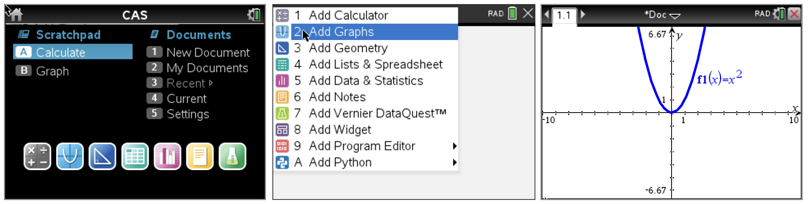
In order to observe the behavior of this sequence graphically, generate a sequence plot by plotting the term number vs. the iterate values. To do this, insert a new page by pressing [ctrl] [+page] and then selecting 2:Add Graphs. In this case, you do not want to graph a function, but the sequence points. To change the type of graph, press [menu] and then select 3:Graph Entry/Edit followed by 7:Sequence and 1:Sequence. You will notice that the command line at the top of the screen will change yielding fields into which you can enter the sequence relationship and initial value (see images below). Since we want to generate an iterative sequence based on the function stored in \(f1\left(x\right)\text{,}\) we enter \(u1\left(n\right)=f1\left(u1\left(n-1\right)\right)\) so that the sequence plotter will use the function value of the pervious number in the sequence to generate the new number in the sequence. Use 0.5 as your initial value for now. You can adjust the viewing window by grabbing a tick mark on the axis by holding down the "click/grab" key located in the center of the NavPad (mouse pad) until the hand closes. Dragging your finger across the NavPad will adjust the view. If you want to adjust only one axis scale at a time, simply hold down the [shift] key while you move on the screen. To adjust where the axes are located within the window, move to any open space in the graphing window and hold the "click/grab" key down until the hand closes, then move the entire graph to any location you desire (see images below).
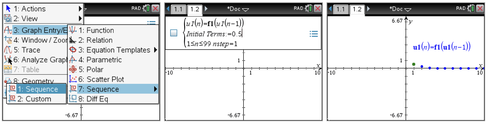
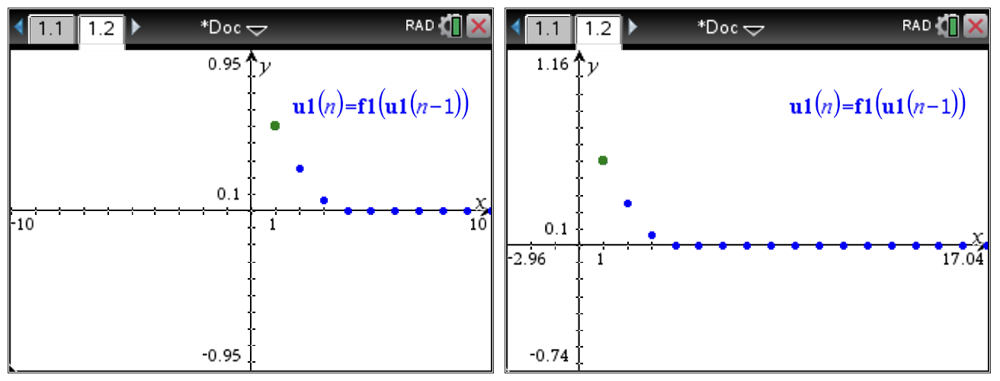
In order to explore the relationship between the parameter, \(a\text{,}\) and the behavior of the sequence, it will be helpful to view the function and the sequence plot side-by-side. In order to do this press [+page] to insert a new page and then press [esc] since you do not wish to insert just one application, but two in a side-by-side layout. Now press [doc] and select 5:Page Layout and 2:Select Layout followed by 2:Layout 2. This will give a side-by-side partitioned screen that will allow you to place a different application in each partition.
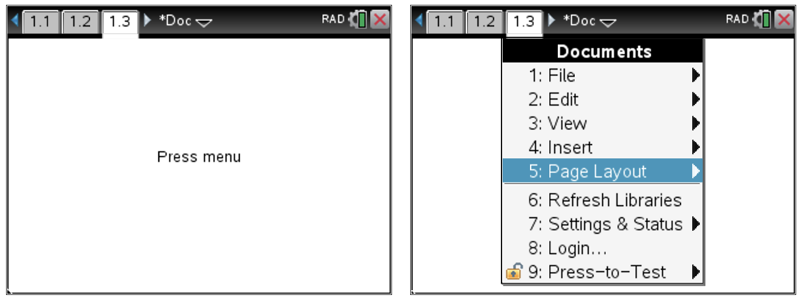
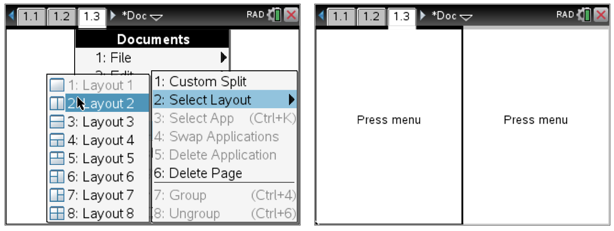
In order to copy the graph page for both the function and the scatter plot, you must first select them. Page back to the function graph by pressing [ctrl] followed by the left arrow until you get to the page you want. Unfortunately you cannot just copy the page, but must “select” it first. To do this, press [doc] and then select 5:Page Layout followed by 3:Select App. In the future, the shortcut for selecting an application is [ctrl][K]. You will see the border of the screen begin to flash indicating it is selected. Then press [ctrl][C] to copy it (just like on a computer). Now page back to the split screen by pressing [ctrl] followed by the right arrow until you reach it. To paste the graphing screen into the left side, just press [ctrl][V] (like paste on a computer). To get the sequence plot pasted into the right side of the screen, repeat this process, but you will need to click on the right side of the screen to make it active before pasting. You will know that a portion of the screen is active since it will have a darkened border around it (see screens below).
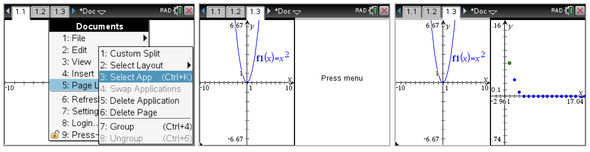
At this point you are ready to examine the effects of the parameter, \(a\text{,}\) on the behavior of the sequence. The side-by-side view of the two graphs allows you to manipulate the function and see the sequence plot change dynamically in real time. To do this, move the cursor to the edge of the parabola until you see the dilation icon appear as shown below. Press and hold the click key until the "hand" closes to grab the parabola then use the arrow keys to “morph” it. To "let go" just press [esc].
(a)
Sketch the graphs for at least four different values of \(a\) in \(f\left(x\right)=ax^2\text{.}\) Describe any patterns you may see. Will the sequence always converge?
As you have seen, the parameter, \(a\text{,}\) affects the behavior of the sequence. Are there other factors that also affect the behavior of the sequence? You may have already considered the possibility that the “seed”, or initial, value might also affect it. At this point change the seed value and investigate how the parameter, \(a\text{,}\) and the seed value interact. You can change the seed by clicking in the sequence window and editing the initial term or by grabbing the initial point (green) in the sequence plot and moving it or editing it directly in the command line. To make the command line visible, press [ctrl][G] or double click in any white space in the window.
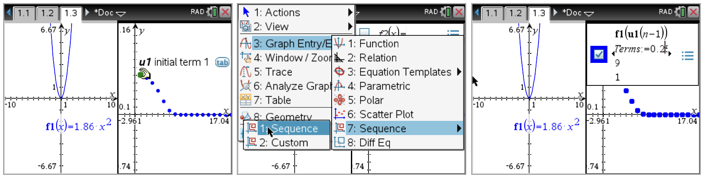
(b)
Record your data for at least two other seed values and the corresponding different values of \(a\) for each seed sketching your plots. Does there appear to be a relationship between the seed and a? Describe any patterns you may see.
Since we will want to explore the effects of the seed value for multiple trials, it will make it easier to place an editable seed value on the graphing page. To do this, on the graphing page containing the parabola, select [menu] and then 1:Actions followed by B:Insert Slider. Type the variable name, \(\mathbf{seed}\text{,}\) into the slider Variable dialogue box and press [enter]. You can place the slider anywhere in the window and elongate it by grabbing the dot on either end. To adjust the slider after it is set in place, click on the slider box and press [ctrl][menu] to open the attributes and select 1:Move to move location or 2:Settings and edit the settings as you wish. You can also change the slider settings to allow finer step sizes when dragging (below shows changing it to 0.01).
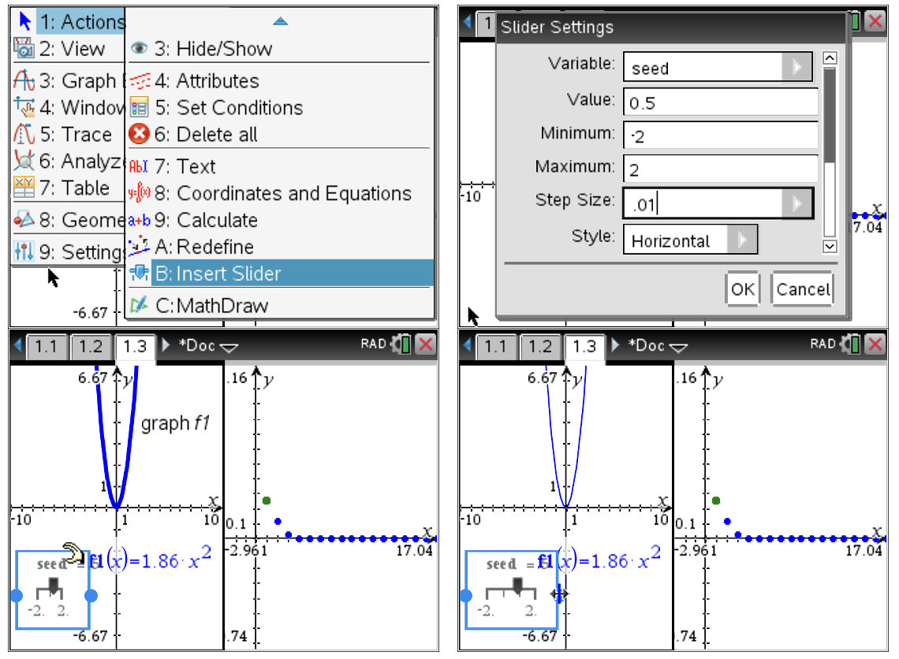
Now to connect the slider to the sequence plot, edit the sequence plot setting as you did before so that the Initial Term simply reads, seed. This will now allow you to change the seed value on the graphing page for the function. You can also move the slider to a convenient place on the screen so that it is not interfering with the view of the graph.
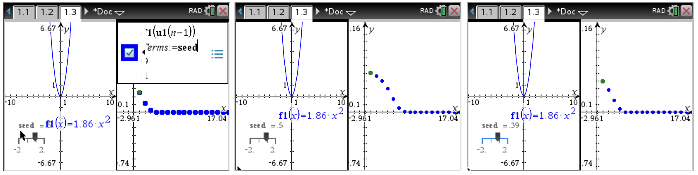
(c)
Investigate other combinations of \(a\) and the \(seed\text{.}\) Record your data and sketches. Does there appear to be a relationship between the seed and \(a\text{?}\) Describe any patterns you may see. Based on your observations, can you predict whether or not the sequence will converge?
(d)
Repeat your process from part (c) for another seed value recording your data and sketches. Did your second choice of seed value confirm or refute any earlier conjectures? Explain.
Although we may have a conjecture at this point, we still need to prove that this conjecture will always hold. To accomplish this, we turn to the algebraic representation. Open a new Calculator page by pressing [ctrl][+page] and selecting 1:Add Calculator. Define the function \(f\) by pressing [menu] and selecting 1:Actions followed by 1:Define. Then enter the function, \(f\left(x\right)=a\cdot x^2\) keeping in mind that implied multiplication is not recognized between two letters and that you must use the [\(\times\)] key. We can explore a few cases for \(f\left(f\left(x\right)\right), f\left(f\left(f\left(x\right)\right)\right), \ldots\) on the Calculator page (see below).
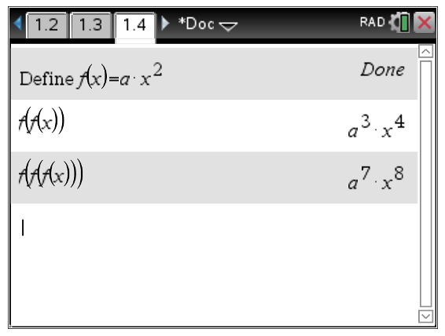
Since the spreadsheet in the CAS allows symbolic entries, we can use the Generate Sequence feature to look at repeated iterations of the function composition. To do this, insert a new 4:Lists & Spreadsheet page. Give the first column a title of, \(\mathbf{iterations}\text{.}\) Now generate the sequence of compositions as shown below by entering \(x\) in the first open cell. In cell A2, enter \(\mathbf{=f(a1)}\) just as you would in Excel. You will see an algebraic result appear. Now move your cursor to the bottom right corner of the cell until you see a \(\mathbf{+}\) appear and click and drag down the column to perform a “fill down”. You should see expressions appear (see below).
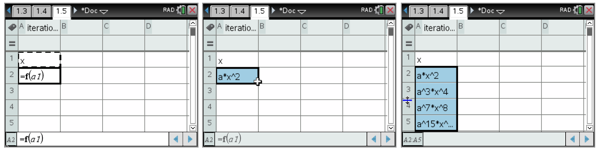
(e)
Examining several different iterations of \(f\) composed with itself, describe any patterns you see. How might we prove any patterns that you may observe will always hold?
(f)
Enter several different iterations of \(f\) composed with itself where instead of the initial input being \(x\text{,}\) the input is \(\frac{1}{a}\text{.}\) What output do you get for each case you try? How do the input and output compare?
Before we continue our discussion of the mathematics involved here, reread the vignette of the classroom discussion in the Case Study: Over and Over and Out found in Activity 2.3.6.
Activity2.3.8.Over, and Over, and Over, and Out: Revisited.
Now that we have spent some time exploring the mathematics involved in the situation that played out in the vignette where Sam made an interesting observation, let’s look at how we might change our approach to leading the class discussion.
(a)
In light of your conclusions from Activity 2.3.7, devise a strategy to investigate Sam’s question at the end of the vignette. You may want to graph the line \(y=x\) along with your function, \(f\left(x\right)=ax^2\text{.}\) Describe anything you notice about these two graphs.
(b)
Try graphing Sam’s function along with \(y=x\text{.}\) What do you notice?
(c)
How is the line \(y=x\) related to your observations from Activity 2.3.7?
(d)
Suppose you wish to solve a polynomial of the form \(p\left(x\right)=0\text{.}\) Consider the transformed equation \(p\left(x\right)+x=x\text{.}\) Now let \(q\left(x\right)=p\left(x\right)+x\text{.}\) Discuss a practical application of the iteration convergence process you have just explored as it is applied to \(q\left(x\right)\) and its relationship to the solution of the original equation, \(p\left(x\right)=0\text{.}\) How does Sam’s question at the end of the vignette relate to the ability to find real solutions to \(p\left(x\right)=0\text{?}\)
Now let’s revisit your original responses to the vignette in Activity 2.3.6. In the next few questions, try to view the vignette through the lens of undergraduate mathematics. In particular, try to relate your experiences from our mathematical exploration in Activity 2.3.7 to what is happening in the classroom exchange in Jill’s class.
(e)
In light of your experience in Activity 2.3.7, describe the central mathematical issues involved in the classroom exchange.
(f)
Describe how your facilitation of the rest of the classroom discussion would change from how you responded earlier in Activity 2.3.6 based on your experiences in Activity 2.3.7. Give specific examples to illustrate what you would do.
One of the difficulties common to pre-service teacher preparation is the ability to see how the undergraduate mathematics curriculum is connected to the secondary curriculum. To address this, we will again examine a secondary mathematics curriculum, The Interactive Mathematics Program and reflect on how this type of curriculum is related to the classroom discussion from our previous vignette and to the undergraduate mathematics explored in Evaluate Me Again, Sam (Activity 2.3.7).
Activity2.3.9.
Again, read through the supplemental problem titled, Over, and Over, and Over and…, from The Interactive Mathematics Program from the fourth year text of IMP found on pages 153-154.
(a)
Compare/contrast the text’s approach to the investigation and the teacher’s approach from the vignette.
(b)
Working in your groups from the activity Evaluate Me Again Sam, discuss how the IMP approach addresses or fails to address student comments and questions from the vignette.
(c)
Based on your experiences with Evaluate Me Again Sam, describe how the mathematics content learned in the undergraduate curriculum would affect your classroom decisions if you were to find yourself in the same situation as Jill in the vignette.
The previous explorations have given us some insight into predicting when an iterative sequence will converge and when it might diverge. So how can we be certain of the behavior and then, as teachers, help our students discover the properties behind the behavior? Here we will take a deeper look into the observations made in our previous investigations and see how iterative sequences can play a role in practical applications.
The concept of iteration is an important part of the mathematical landscape. It is used in real-world applications to find solutions that have no direct algebraic solution as well as for approximating values of mathematical constants such as \(e\) and \(\pi\text{.}\) Having taken Calculus, you are already familiar with one such iteration process, Newton’s Method. Recall that Newton’s Method allows the approximation of roots by using the projection along a tangent line to the x-axis as a new approximation of the root. Then the new value from the x-axis is used as the new point of tangency and the process continues until the desired level of accuracy for the root is achieved.
We know that some equations of the form \(f\left(x\right)=0\) can be solved exactly (e.g. using the quadratic formula). However, the general equations that can be solved exactly are very few within the realm of mathematical endeavor. To be able to approximate a solution, Isaac Newton noticed that as a point on a curve approaches the root of the function, its tangent line at that point begins to have an x-intercept that is approximately the root desired (see Figure 2.3.4).
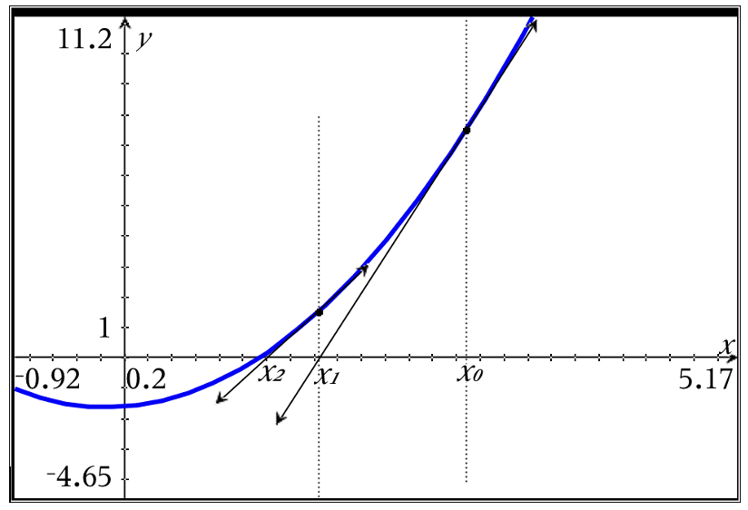
Figure2.3.4.Tangents Lines and Newton’s Method
Newton’s idea was to “surf” the tangent line. In other words, pick an x-coordinate of a point you know is close to the actual root, and then find where the tangent line to the curve at that point intersects the x-axis. Now use the x-intercept of the tangent line as the new x-coordinate as stated earlier and repeat the process. With each iteration, the approximation gets closer to the root of the function.
For example, suppose you wish to find the solution for \(f\left(x\right)=0\text{,}\) where \(f\left(x\right)=x^2-3\text{.}\) As you can see, one solution is approximately 2 as can be seen from the graph in Figure 2.3.5.
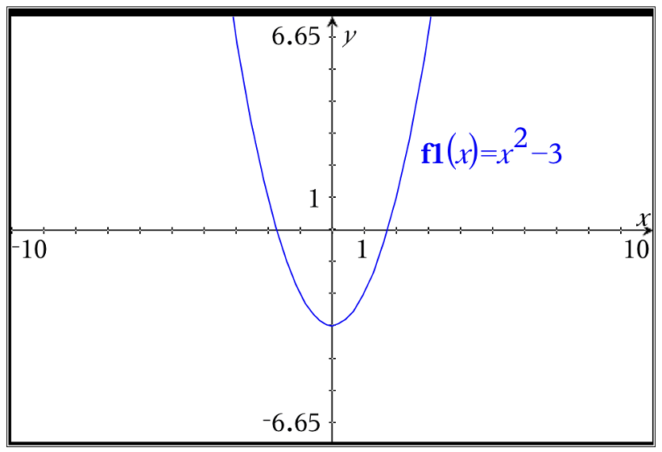
Figure2.3.5.Graph of \(f\left(x\right)=x^2-3\)
In order to find a better approximation, we can notice that if \(x_0\) is our initial guess, then the next choice for an approximation of the root will be \(x_1=x_0-\frac{f\left(x\right)}{f'\left(x\right)}\text{,}\) since this is where the tangent line at \(x=x_0\) intersects the x-axis. Repeating this process will give better approximations.
In practice, we can approximate using Newton’s Method on our CAS by entering the original function in one location and the formula for the next approximation in another function location referring to the original function. In the figure below, the original function is entered in the function \(f\left(x\right)\) and the iteration formula is in \(nm\left(x\right)\) for “Newton’s Method” (see Figure 2.3.6).
We now simply evaluate the \(nm\left(x\right)\) function at our initial guess and then successively using our result as the new input into \(nm\left(x\right)\text{.}\) You can see that with just a few iterations, we get a solution to 11-decimal place accuracy. Here we have actually approximated \(\sqrt{3}\) since the function we are using is \(f\left(x\right)=x^2-3\text{.}\)
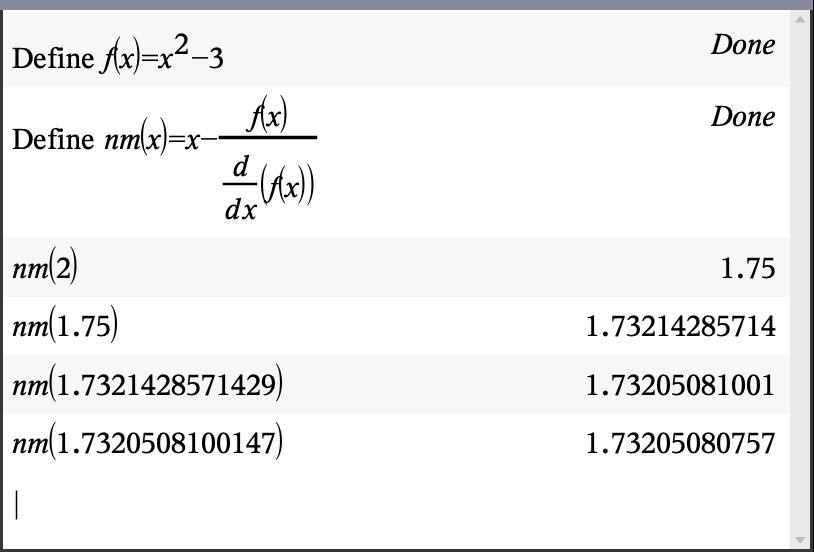
Figure2.3.6.Numerical Iterations of Newton’s Method
From a graphical standpoint, suppose we begin with an initial value of 3. The x-intercept of the tangent line at \(x=3\) is 2 and thus a new tangent is constructed at \(x=2\text{.}\) As can be seen from the sketch in Figure 2.3.7, the new x-intercept is much closer to the root. It does not take many iterations of this process to get extremely accurate approximations.
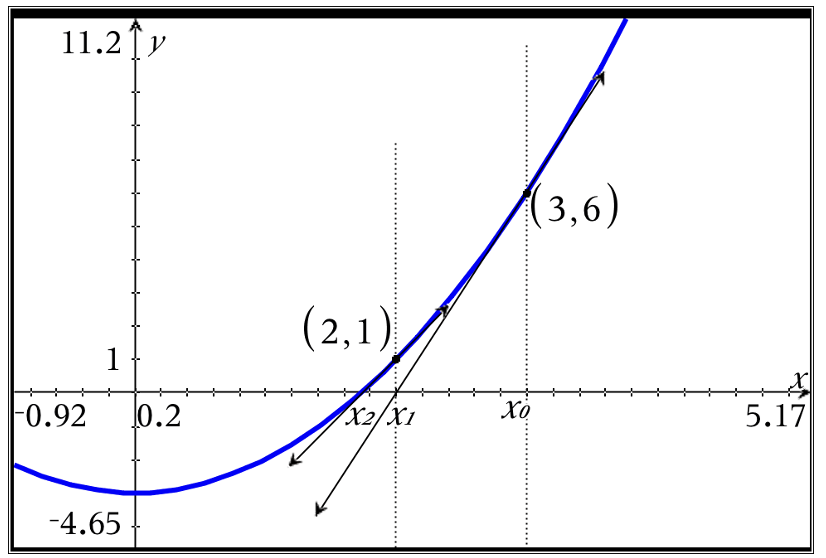
Figure2.3.7.Tangent Lines in Newton’s Method Approaching \(\sqrt{3}\)
As we have seen from exploration and classroom vignettes, not all self-iterating functions yield a convergence. So how can we tell if a particular function will converge to a value at all or whether or not it may have multiple values that are possible for convergence? How do we predict the value to which they will converge? Are there any criteria that can be applied to predict convergence?
Let us begin by examining the familiar function from the activity, Evaluate Me Again Sam, Activity 2.3.7, with \(f\left(x\right)=\sqrt{x}\text{.}\) Below is a graph of \(f\) along with the graph of \(y=x\text{.}\) The reason for \(y=x\) will become evident shortly. Assume that \(f\) is continuous and differentiable on the desired interval. Also let us define the iteration by stating \(x_{n+1}=f\left(x_n\right)\text{.}\) All this says is that we choose the previous output of \(f\) as the new input of \(f\) each time we iterate the function with itself. Here is the reason for graphing \(y=x\) along with \(f\text{.}\) Since the outputs are found along the y-axis, we get \(x_{n+1}=y_n\text{.}\) This process is shown by the arrows marking the progress of the iteration on the graph in Figure 2.3.8. We begin with \(x_0\) and find its corresponding output (\(y_0\)) on the function. We then move horizontally until we meet the line \(y=x\) since this is where x and y are the same. We now move vertically to the x-axis so that we stop on the “new input” (\(x_1=y_0\)). We repeat the process by moving vertically to the function’s new output. As you can see by following the arrows in the graph, we keep moving closer and closer to the point of intersection between the graph of \(f\) and \(y=x\text{.}\) But why is the intersection with \(y=x\) important?
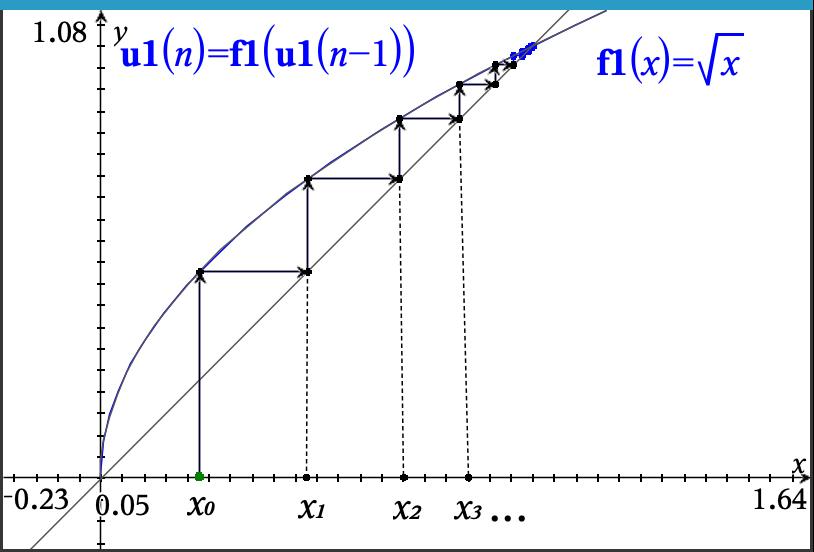
Figure2.3.8.Iteration Sequence Attracting to Fixed Point of \(\sqrt{x}\)
The point where a function intersects the line \(y=x\) is important and is called a fixed point. The reason it plays a vital role in the convergence of iterated functions is that it has the property of the function’s output being equal to the function’s input.
Definition2.3.9.
A fixed point of a function, \(f\text{,}\) is a number, \(p\text{,}\) in the domain of \(f\) such that \(f\left(p\right)=p\text{.}\) In other words, when applying \(f\text{,}\) the point, \(p\text{,}\) stays fixed.
Since the convergence of an iterated function relies on the fact that the \(\lim_{n\rightarrow \infty}f\left(x_n\right)=p\) when \(\lim_{n\rightarrow \infty}x_{n+1}=p\) and thus \(f\left(p\right)=p\) assuming \(f\) continuous, the intersection of \(f\) and \(y=x\) gives us possible values of convergence for our iterated function. We can gain insight into some general principles for convergence by looking at the earlier investigation found in the IMP materials, Over, and Over, and Over, and…. Recall that in this exploration, the students began with linear functions. For functions such as \(f\left(x\right)=3x+2\text{,}\) the iterated function diverged no matter what initial seed value was chosen. Consider the function \(g\left(x\right)=\frac{1}{2}x+1\) and examine the progression of the inputs as shown in Figure 2.3.10 using arrows along the graph. Notice that no matter which side of the fixed point you begin with, the result converges on the fixed point.
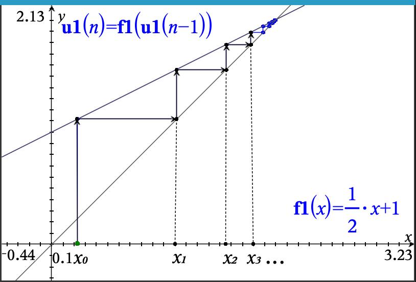
Figure2.3.10.Iteration Sequence Attracting to Fixed Point of \(g\left(x\right)=\frac{1}{2}x+1\)
Now consider the function, \(h\left(x\right)=2x-1\text{.}\)
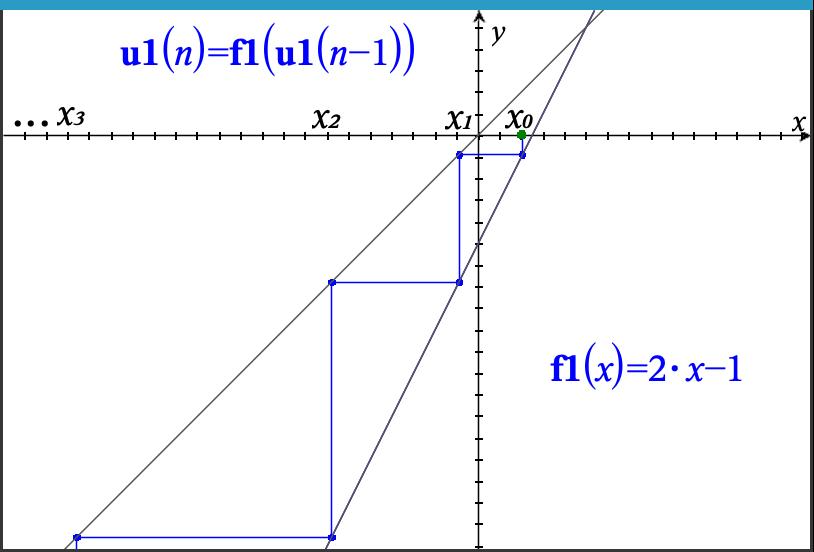Figure2.3.11.Iteration Sequence Repelling from Fixed Point of \(h\left(x\right)=2x-1\) from Left
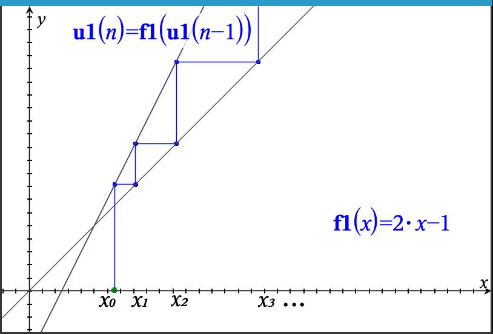Figure2.3.12.Iteration Sequence Repelling from Fixed Point of \(h\left(x\right)=2x-1\) from Right
As can be seen here, no matter which side of the fixed point we choose, the iteration diverges to either \(\pm \infty\text{.}\) In this case, the fact that \(h\) is steeper than \(y=x\) means as we choose points near the fixed point to use for iteration, the mapping onto the line \(y=x\) prior to the re-evaluation of \(h\) moves away from the fixed point. As we saw with the function \(g\left(x\right)=\frac{1}{2}x+1\) earlier, the mapping back to the line \(y=x\) prior to re-evaluation of \(g\) causes the \(x_n\) to approach the fixed point. The behavior near these types of fixed points has given rise to the categorizations of repelling and attracting fixed points.
So if sometimes we are repelled from a fixed point and sometimes we are attracted to one, how can we tell what will happen? For example, when using \(f\left(x\right)=\sqrt{x}\text{,}\) we saw any seed we used be attracted to 1, but with \(f\left(x\right)=x^2\text{,}\) it was repelled. Why?
To look deeper into this let’s reconsider our earlier activity from IMP, Over, and Over, and Over, and..., we discussed in Activity 2.3.5.
Activity2.3.10.Over, and Over, and Over, and...: Analyzed.
In looking at the IMP activity, Over, and Over, and Over, and..., we noticed that in some cases iteration converged, but in other cases we had divergence. Instead of looking at specific linear functions, here we will take a look at the general case for \(f\left(x\right)=mx+b\text{.}\)
(a)
On your CAS, define the function, \(f\left(x\right)=m \cdot x+b\text{.}\) Note that on most CAS, you need to make sure to use the multiplication operator between the \(m\) and the \(x\) since we could easily name a variable with a multi-letter name. Now use your CAS to evalute and obtain expressions for \(f\left(x\right)\text{,}\)\(f\left(f\left(x\right)\right)\text{,}\)\(f\left(f\left(f\left(x\right)\right)\right)\text{,}\) and \(f\left(f\left(f\left(f\left(x\right)\right)\right)\right)\text{.}\) Describe any patterns you see in the expressions.
Hint.
When grouping terms, give your responses as a single term with an \(x\) and another term with a \(b\) factored out of a sum of terms involving \(m\text{.}\)
(b)
If \(f^n\left(x\right)\) represents the \(n^{th}\) iteration of the function with itself, give an expression for \(f^n\left(x\right)\text{.}\)
(c)
Based on your observations, we want to prove that your conjecture for \(f^n\left(x\right)\) is always true. Proof by induction is a means to do this. Essentially, you assume it is true for the \(k^{th}\) iteration and then try to show it is true for the \(\left(k+1\right)^{st}\) case. Based on your expression from part (b), assume the form of \(f^k\left(x\right)\) and plug \(x=mx+b\) in for \(x\) in your expression and rearrange the terms. Do you get the same thing as if you replaced all of the \(k\) in your \(f^k\left(x\right)\) expression with \(k+1\text{?}\) If so, you have shown that you can always get to the next largest \(n\) value and so this will continue to infinity.
(d)
Now that we have established that your expression for \(f^n\left(x\right)\) will always work, we need to find when this will converge and when it will diverge. Consider the long sum that is associated with \(b\) in your expression (a sum of powers of \(m\)). Based on what you know from geometric series (think back to Calculus 2), for what values of \(m\) will this series converge?
(e)
If the sum in the term associated with \(b\) in your expression converges for your conditions on \(m\text{,}\) will those same values of \(m\) also guarantee that the term involing the \(x\) will also converge? Explain.
The use of linear functions to analyze the convergence or divergence of the iterated function is helpful since as with any continuous and differentiable function, we consider them locally linear as we zoom in on a fixed point. Therefore, this leads us to the following argument regarding convergence of iterated functions with fixed points.
Theorem2.3.13.
Let \(f\) be a continuous and differentiable function with a fixed point, \(z=f\left(z\right)\text{.}\) Further, let \(x_n=f\left(x_{n-1}\right)\text{.}\) If \(x_0\) lies on an interval, \(I\text{,}\) containing \(z\) such that \(\left| f'\left(x\right) \right| \lt 1\) for all \(x \in I\text{,}\) then \(x_n\) converges to \(z\text{.}\)
Proof.
Suppose \(x_0 \in I\) such that \(\left| f'\left(x\right) \right| \lt 1\) for all \(x \in I\text{.}\) Since \(x_1=f\left(x_0\right)\) and \(f\left(z\right)=z \Rightarrow\)\(x_1-z=f\left(x_0\right)-f\left(z\right)\text{.}\) Now by the Mean Value Theorem, there exists some \(c\) between \(x_0\) and \(z\) such that \(f'\left(c\right)=\frac{f\left(x_0\right)-f\left(z\right)}{x_0-z}\) and thus \(f\left(x_0\right)-f\left(z\right)=\left(x_0-z\right) \cdot f'\left(c\right)\text{.}\) Since \(c \in I\) and by assumption \(\left| f'\left(x\right) \right| \lt 1\) for all \(x \in I\)\(\Rightarrow\)\(\left|x_1-z\right| \leq k\left|x_0-z\right|\) for some \(k\) with \(\left|k\right| \lt 1\text{.}\) Therefore, \(x_1 \in I\text{.}\) Using a similar argument, \(\left|x_2-z\right| \leq k\left|x_1-z\right|\leq k^2\left|x_0-z\right|\text{.}\) In general, we can state that \(\left|x_n-z\right|\leq k^n\left|x_0-z\right|\text{.}\) Since \(\lim\limits_{n\rightarrow \infty}k^n=0\text{,}\) we get \(\lim\limits_{n\rightarrow \infty} \left|x_n-z\right|=0\) and thus \(\lim\limits_{n\rightarrow \infty}x_n=z=f\left(z\right)\text{.}\)
So what does this theorem say about convergence to fixed points? Basically, the theorem says that if the fixed point, \(z\text{,}\) is in an interval where \(\left|f'\left(x\right)\right| \gt 1\text{,}\) then the mapping that transforms the outputs to inputs back into the function is expanding and thus the iteration process diverges.
Although Newton’s Method is very efficient for finding zeros of a function, a more simplistic method involves only the iteration of a function with itself using only a small alteration. Suppose you are looking for the root of a polynomial, \(p\left(x\right)\text{.}\) The process boils down to solving the equation, \(p\left(x\right)=0\text{.}\) Now consider the transformed equation formed by adding \(x\) to both sides of the original equation, \(p\left(x\right)+x=x\text{.}\) If we let \(q\left(x\right)=p\left(x\right)+x\text{,}\) we are essentially finding a solution to \(q\left(x\right)=x\text{.}\) We know from our earlier discussion that this solution is simply a fixed point for \(q\left(x\right)\text{.}\) Based on the fact that repeated iteration will converge to a fixed point (if convergence does occur), we can simply take the original function, add \(x\text{,}\) and then iterate it with itself as a method to find its root. The down side of this process is that not all fixed points are accessible through iteration as we have seen in earlier examples. However, this does remain a very simple algorithm for finding roots although not as efficient as Newton’s Method.
Subsection2.3.4Figurative Sequences
Exercises2.3.5Exercises
1.
2.
3.
4.
Use Newton’s Method to find approximations (11-decimal places) to all solutions of \(x^3-2x^2-3x+1=0\text{.}\) Explain your process and why you picked the initial value you chose.
5.
Use Newton’s Method to find approximations (11-decimal places) to all solutions of \(e^x=x^10\text{.}\) Explain your process and why you picked the initial value you chose.
6.
Give an 11-decimal place approximation for \(\sqrt{51}\text{.}\) Explain your process and why you picked the initial value you chose.
7.
The function \(f\left(x\right)=x^2\) has two fixed points, \(x=0\) and \(x=1\text{,}\) where it intersects the line \(y=x\text{.}\) Explain why it is not possible for the iterated sequence \(\left \{a_n \right \}\) defined by \(a_{n+1}=f\left(a_n\right)\) to converge to 1 unless \(x_0=1\text{.}\)